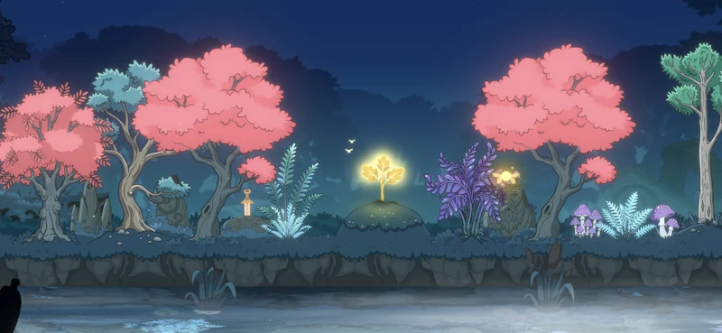

Щоденник розробки #5
Як погода у Lumen Grove зробила гру по-справжньому живою
Для чого іграм погода? Про атмосферу, занурення та ритм живого світу.

Для чого взагалі іграм потрібна погода? Особливо якщо вона нічого не додає до геймплею і ніяк не впливає на ігрові правила. Здавалося б, це саме та фіча, яка першою має потрапити під скорочення скоупу, особливо на ранніх етапах розробки.
Але тут важливо розібрати контекст, бо саме від нього залежить, чи фіча йде «під ніж», чи отримує зелене світло. Річ у тому, що самого геймплею тепер часто недостатньо. Гравці хочуть історій від «три в ряд», атмосфери в іграх про пошук предметів — словом, глибини там, де її історично майже не було.
А якщо говорити про затишні ігри, якою є Lumen Grove, то пріоритет подібних фіч зростає кратно. Бо погода — це насамперед про атмосферу. Вона створює настрій, додає відчуття реальності й допомагає повірити в уявний казковий світ. А це, своєю чергою, може привести до того самого бажаного відчуття «потоку».
Тож у цьому контексті будь-що, що працює на атмосферу, — це кандидат із високим пріоритетом, а не навпаки.
Рухаючись далі, щоб прийняти правильне рішення, варто поставити собі кілька питань і встановити основу, від якої можна буде відштовхуватись у подальшому. Навіть казкові світи живуть за своїми правилами, і їх не варто порушувати без нагальної причини.
Для мене це були питання такого типу: наскільки реалістичною має бути погода? Що можна, а що ні? Чи прив’язана погода до ігрових івентів? І головне — що гравець має отримати від цієї фічі?
Я вирішив, що, окрім атмосфери й візуалу, погода має приносити відчуття різноманітності та зміни життєвого циклу світу. Тому за одну ігрову сесію гравець може побачити одну-дві зміни погоди, щоб «внутрішній» час не плинув надто швидко. А якщо він заходить у гру кілька разів протягом дня, то гарантовано застане різні стани гаю. Це може бути дощ, туман над рікою або навіть аврора разом із легким сніжком.
На цьому етапі це моя улюблена особливість гри. Ця незначна, на перший погляд, деталь додала ту «краплинку», яка миттєво підняла рівень імерсивності, працюючи на покращення ігрового досвіду та багатошаровості світу.
Запрошую перейти за посиланням, щоб відвідати Lumen Grove і його казковий світ.